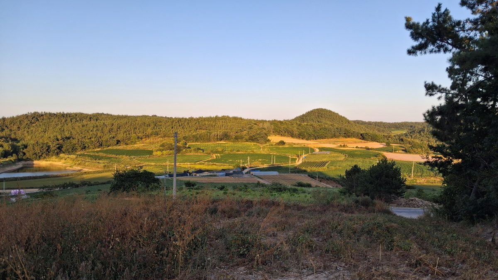

전남광주시의회, 대통령직속 기본사회위와 간담회…신안 햇빛연금 전역 확대·공유부 기금 조성 논의

햇빛·바람 활용한 에너지 기본소득, AI 시대 공유부 배당·국부펀드도 거론…송형곤 의장은 조례 제정·기금 조성 등 자치입법 추진 밝혀, 구체안은 아직
전남광주통합특별시의회가 5일 의회 회의실에서 대통령 직속 기본사회위원회 강남훈 부위원장과 간담회를 열고, 신안군 햇빛연금 같은 지역 사례를 전남광주 전역으로 넓히는 방안 등을 논의했다. 시의회 기본사회상설특별위원회가 주관한 이날 간담회에서는 햇빛·바람 같은 자연자원을 활용한 에너지 기본소득과 인공지능(AI) 시대의 공유부 배당, 국부펀드 조성, 지역순환경제 구축 방안이 함께 거론됐다. 참석자들은 농어촌기본소득을 지방소멸에 대응하는 정책으로 키우는 방안도 집중적으로 다뤘다. 송형곤 의장은 기존 전남형 기본소득을 발전시켜 정부 농어촌기본소득의 선도 모델을 만들겠다며 "조례 제정과 공유부 기금 조성 등 자치입법을 추진하겠다"고 말했다. 박필순 기본사회특위 위원장은 농어촌기본소득과 주거·돌봄·교통·먹거리 같은 지역 맞춤형 기본서비스 정책을 구체화하고 중앙정부와 협력을 강화하겠다고 밝혔다. 다만 이날은 논의 단계로, 조례안의 이름과 제출 시기, 기금 규모는 정해지지 않았다.
시민에너지 관점
미국 알래스카주는 1976년 주 헌법을 고쳐 석유 수입의 일부를 영구기금에 쌓고, 1982년부터 그 운용 수익을 주민 모두에게 해마다 배당해 왔다. 햇빛과 바람은 석유보다 훨씬 고르게 퍼진 공유 자원이어서, 신안군 햇빛연금처럼 그 이익을 주민에게 돌리는 방식은 전남광주 어디서나 시도할 수 있다. 기금이 쌓이는 만큼만 나눌 수 있다는 한계를 걱정하는 목소리도 있지만, 주민과 협동조합이 발전소 지분을 직접 갖는 구조와 함께 가면 배당은 일회성 지원이 아니라 마을이 가진 자산에서 나오는 소득이 된다. 시의회는 조례를 만들 때 공유부 기금의 재원으로 재생에너지 발전 수익을 분명히 하고, 주민 출자로 세운 발전소가 그 기금을 채우는 길을 함께 열어야 한다.
출처: 연합뉴스 2026-11-05 박철홍 원문 보기
全南光州市議会、大統領直属の基本社会委員会と懇談会…新安の太陽光年金の全域拡大・共有富基金の造成を議論
日差し・風を生かしたエネルギー基本所得、AI時代の共有富配当・国富ファンドも取り上げ…ソン・ヒョンゴン議長は条例制定・基金造成など自治立法の推進を表明、具体案はまだ
全南光州統合特別市議会は5日、議会の会議室で大統領直属の基本社会委員会のカン・ナムフン副委員長と懇談会を開き、新安郡の太陽光年金のような地域の事例を全南光州の全域に広げる方策などを議論した。市議会の基本社会常設特別委員会が主管したこの日の懇談会では、日差しや風などの自然資源を活用したエネルギー基本所得や、人工知能（AI）時代の共有富の配当、国富ファンドの造成、地域循環経済の構築策があわせて取り上げられた。出席者らは、農漁村基本所得を地方消滅に対応する政策として育てる方策も集中的に話し合った。ソン・ヒョンゴン議長は、既存の全南型基本所得を発展させて政府の農漁村基本所得の先導モデルをつくるとし、「条例の制定や共有富基金の造成など自治立法を推進する」と述べた。パク・ピルスン基本社会特別委員長は、農漁村基本所得と住居・ケア・交通・食などの地域に合った基本サービス政策を具体化し、中央政府との協力を強めると述べた。ただ、この日は議論の段階で、条例案の名称や提出時期、基金の規模は決まっていない。
市民エネルギーの視点
米アラスカ州は1976年に州憲法を改正して石油収入の一部を永久基金に積み立て、1982年からその運用益を住民全員に毎年配当してきた。日差しと風は石油よりもはるかに均等に行き渡る共有資源であり、新安郡の太陽光年金のようにその利益を住民に還元する方式は全南光州のどこでも試みることができる。基金が積み上がった分しか分けられないという限界を心配する声もあるが、住民と協同組合が発電所の持ち分を直接持つ仕組みと組み合わせれば、配当は一度きりの支援ではなく、村が持つ資産から生まれる所得になる。市議会は条例をつくる際に共有富基金の財源として再生可能エネルギーの発電収益を明確にし、住民出資で建てた発電所がその基金を満たす道もあわせて開くべきだ。
出典: 聯合ニュース 2026-11-05 パク・チョルホン 原文を読む
全南光州市议会与总统直属基本社会委员会座谈…讨论将新安阳光年金推广至全域、设立共享财富基金
还谈及利用阳光和风的能源基本收入、AI时代共享财富分红和主权财富基金…议长Song Hyung-gon表示将推进制定条例、设立基金等自治立法，具体方案尚未出台
全南光州统合特别市议会5日在议会会议室与总统直属基本社会委员会副委员长Kang Nam-hoon举行座谈会，讨论了把新安郡阳光年金等地方案例推广到全南光州全域的方案。这次座谈会由市议会基本社会常设特别委员会主办，会上一并提出了利用阳光和风等自然资源的能源基本收入、人工智能（AI）时代的共享财富分红、设立主权财富基金以及构建地方循环经济的方案。与会者还重点讨论了把农渔村基本收入发展为应对地方消亡政策的方案。议长Song Hyung-gon表示，将在现有全南型基本收入的基础上打造政府农渔村基本收入的先导模式，并称"将推进制定条例和设立共享财富基金等自治立法"。基本社会特别委员会委员长Park Pil-soon表示，将把农渔村基本收入以及住房、照护、交通、饮食等因地制宜的基本服务政策具体化，并加强与中央政府的合作。不过，当天仍处于讨论阶段，条例案的名称、提交时间和基金规模都尚未确定。
市民能源视角
美国阿拉斯加州在1976年修改州宪法，把部分石油收入存入永久基金，并从1982年起每年把基金运营收益分红给全体居民。阳光和风是比石油分布均匀得多的共享资源，像新安郡阳光年金那样把收益返还给居民的方式，在全南光州任何地方都可以尝试。也有人担心基金积累多少才能分多少，但如果与居民和合作社直接持有电站股份的结构结合起来，分红就不再是一次性补贴，而是来自村庄自有资产的收入。市议会在制定条例时，应把可再生能源发电收益明确为共享财富基金的财源，并同时开辟由居民出资建设的电站充实该基金的渠道。
来源: 韩联社 2026-11-05 Park Cheol-hong 查看原文
Jeonnam-Gwangju council meets presidential Basic Society Committee, discusses extending Sinan's sunlight pension region-wide and creating a common-wealth fund
Energy basic income from sun and wind, AI-era common-wealth dividends and a sovereign wealth fund were also raised; council chair Song Hyung-gon pledged ordinances and a fund, but no concrete plan yet
The Jeonnam-Gwangju Integrated Special City Council held a meeting on Nov. 5 in its conference room with Kang Nam-hoon, vice chair of the presidential Basic Society Committee, and discussed ways to extend local examples such as Sinan County's sunlight pension across the whole Jeonnam-Gwangju region. The meeting, organised by the council's standing special committee on basic society, also raised energy basic income drawing on natural resources such as sunlight and wind, dividends from common wealth in the age of artificial intelligence (AI), the creation of a sovereign wealth fund and ways to build a circular local economy. Participants also focused on developing rural basic income into a policy to counter regional decline. Council Chair Song Hyung-gon said the council would build on the existing Jeonnam basic income to create a leading model for the government's rural basic income and would "pursue local legislation such as enacting ordinances and creating a common-wealth fund." Park Pil-soon, chair of the basic society special committee, said the committee would flesh out rural basic income and locally tailored basic services in housing, care, transport and food and strengthen cooperation with the central government. The meeting was a discussion, however, and the name and timing of any ordinance and the size of the fund have not been decided.
Citizen Energy View
Alaska amended its state constitution in 1976 to put part of its oil revenue into a Permanent Fund, and since 1982 it has paid a share of the fund's earnings to every resident each year. Sunlight and wind are shared resources spread far more evenly than oil, so returning their profits to residents, as Sinan County's sunlight pension does, can be tried anywhere in Jeonnam-Gwangju. Some worry that a fund can only pay out as much as it accumulates, but combined with a structure in which residents and cooperatives directly own shares in the plants, the dividend becomes not a one-off handout but income from an asset the village owns. When drafting its ordinances, the council should name renewable generation income clearly as a source for the common-wealth fund and open the way for resident-financed plants to fill it.
Source: Yonhap News Agency 2026-11-05 Park Cheol-hong Read the original